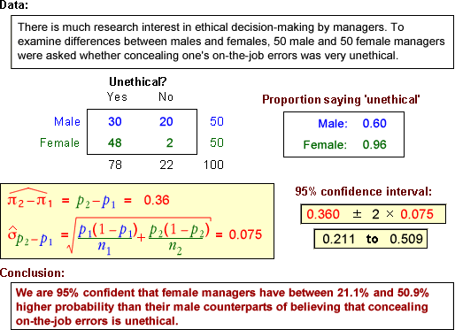

Examples

These examples show the calculations to find a 95% CI for the difference between two proportions.
Emphasise the interpretation under each example.
The data sets are described in the questions.